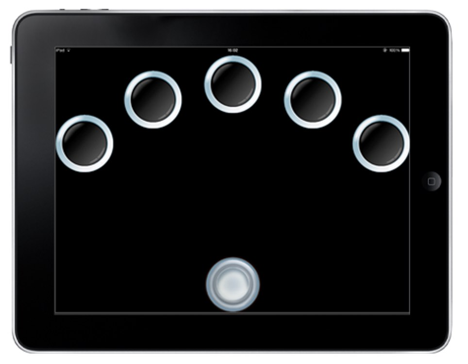
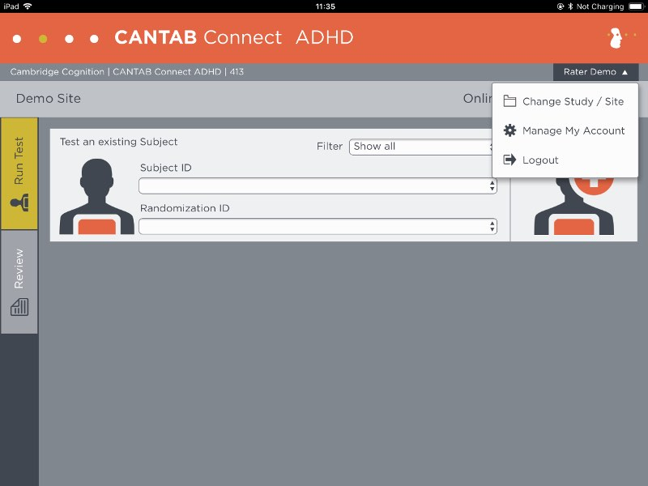
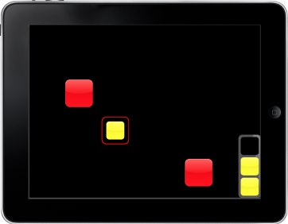

CANTAB Connect (Patient Materials)
- Introduction
- Data transfer protocol for patients
- Device How To / setup for wear
- Troubleshooting/FAQ
- Device return
Introduction
CANTAB Connect is an iPad mobile application that has two components: (i) an administration area for clinical staff to login and create new participants as part of an ongoing study and to add those participants to the CANTAB ThinkFast app; and (ii) a suite of cognitive assessments designed to measure episodic memory, executive function and attention. CANTAB Connect should be used with each participant on their first visit to the clinical site to administer three cognitive tests and to help in activating the participant’s ThinkFast application.
How does this technology look?
|  |  |
| Figure 1: A reactive time assessments. | Figure 2: Adding a participant before a test. |
| Figure 1: A reactive time assessments. |
| Figure 2: Adding a participant before a test. |
What does it record?
CANTAB Connect records responses to specific tests that measure different aspects of cognition, such as visual memory through a gameful task (Figure 3) or the time taken to react, find and match a box to measure working memory (Figure 4).
 |
 |
| Figure 3: The One Touch Stockings Task. | Figure 4: The Spatial Working Memory Task. |
|
| Figure 3: The One Touch Stockings Task. |
| Figure 4: The Spatial Working Memory Task. |
How is it used?
CANTAB Connect is used when a participant first visits a study site to gain a baseline measurement of their cognition and onboard them into the associated take-home cognitive app, ThinkFast.
Data transfer protocol for patients
As a patient: do I need to do anything on a daily basis or all N days?
Yes. On first visit to the clinical site you will be asked to perform a cognitive assessment on an iPad. After completion, a clinician will ask you to download the CANTAB ThinkFast application and open it. They will then provide you with a 6-digit code to use in ThinkFast that will log you in and therefore, any data recorded through ThinkFast will be anonymised.
As a patient: do I need to do anything after each individual period of device / app use ended?
Not applicable.
As a patient: do I need to do anything after my full periods of use of a specific device / app ends?
Not applicable.
Device How To / setup for wear
What sort of a device / application is this, what is it for and how does it work?
CANTAB Connect is a mobile application that is used by clinical professionals on site to administrator one cognitive test to patients on their first visit and to create a new patient record. As part of creating the patient record in the admin application, participants will be provided with a code to log into the CANTAB ThinkFast mobile application on their personal smartphone.
What will I need to do before I can start using this?
Any account setup required?
Not applicable.
Needs pairing with hub-device?
Not applicable.
Any configuration / assembly required?
Not applicable.
How can I get help with using this?
If you have any other questions or concerns, please contact your local study centre:
| Newcastle upon Tyne, United Kingdom | Rotterdam, Netherlands | Kiel, Germany | Muenster, Germany |
|---|---|---|---|
| Person Name, Centre Name, Location | Person Name, Centre Name, Location | Person Name, Centre Name, Location | Person Name, Centre Name, Location |
Newcastle upon Tyne, United Kingdom
Location
Person Name
Centre Name
Rotterdam, Netherlands
Location
Person Name
Centre Name
Kiel, Germany
Location
Person Name
Centre Name
Muenster, Germany
Location
Person Name
Centre Name
Troubleshooting/FAQ
The device / app seems to have stopped working: what should I do?
If the CANTAB Connect application stops working, please close and reopen the application.
Battery?
Please ensure that the iPad remains connected to the mains power using the lightening cable and charger. Ensure that the iPad is charged to at least 50% prior to each testing session.
Sounds?
There are voiceover instructions for the CANTAB tasks. Please ensure that the volume level is set so that the voiceover is audible. Sound can be increased or decreased by tapping the buttons on the right side of the iPad.
Connectivity issues?
Although the CANTAB assessments can be run without being connected to Wi-Fi, an internet connection is required for the data collected to be automatically transferred and backed up on Cambridge Cognition’s secure servers. When Wi-Fi is not available, the data will be stored locally on the iPad in a secure encrypted format and will be transferred to Cambridge Cognition as soon as the iPad is connected to Wi-Fi.
It is recommended that the iPad is connected to the Wi-Fi during each assessment. However, if this is not possible the user should ensure that the tablet is connected to Wi-Fi as regularly as possible so that subject data is transferred to Cambridge Cognition.
Need to restart or log in again?
Not applicable.
Using the device / app is uncomfortable to me: what can I do?
Adjust wear style?
Not applicable.
Adjust usage pattern?
Not applicable.
How can I get help with using this?
If you have any other questions or concerns, please contact your local study centre:
| Newcastle upon Tyne, United Kingdom | Rotterdam, Netherlands | Kiel, Germany | Muenster, Germany |
|---|---|---|---|
| Person Name, Centre Name, Location | Person Name, Centre Name, Location | Person Name, Centre Name, Location | Person Name, Centre Name, Location |
Newcastle upon Tyne, United Kingdom
Location
Person Name
Centre Name
Rotterdam, Netherlands
Location
Person Name
Centre Name
Kiel, Germany
Location
Person Name
Centre Name
Muenster, Germany
Location
Person Name
Centre Name
Device return
What do I do when a period of device use is over?
Not applicable.
Before the device is returned or disposed of: does any data need to be transferred?
Not applicable.
Do I need to return the device somewhere?
Not applicable.